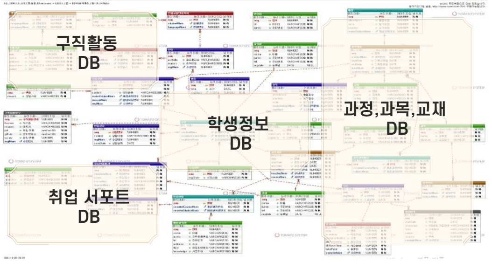
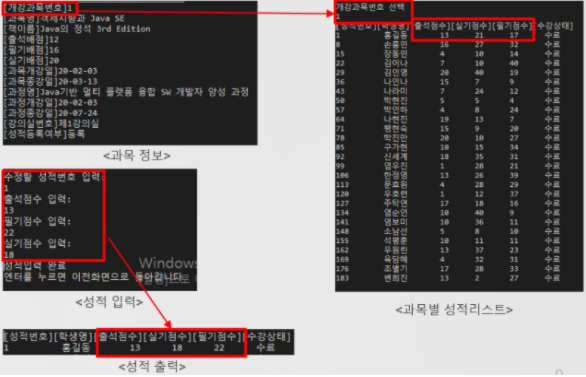
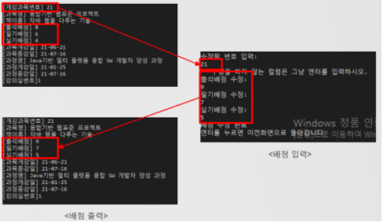
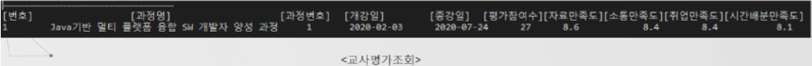
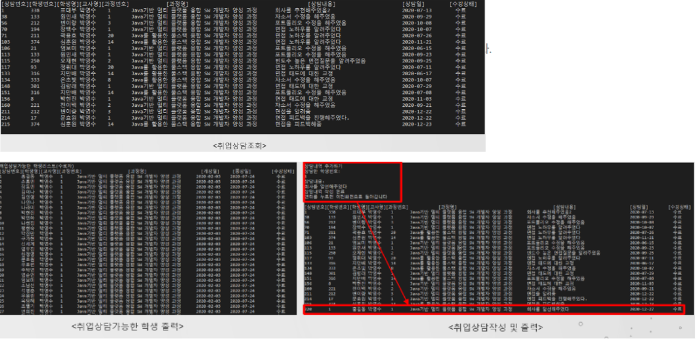
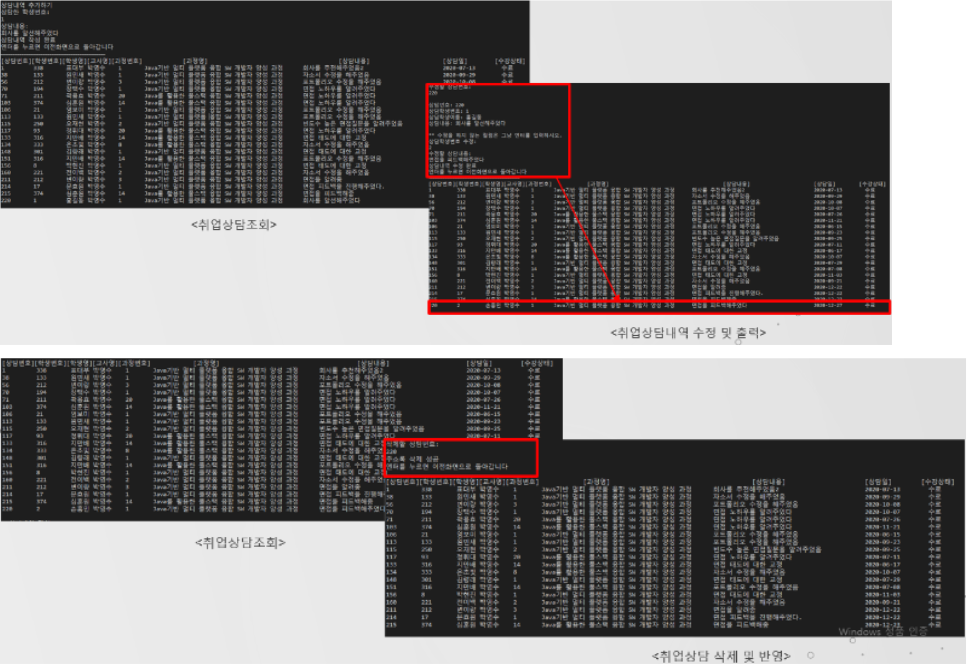

SistProgram (교육센터 프로그램)
 https://github.com/hyunwooDEV/SistProgram
https://github.com/hyunwooDEV/SistProgram
2020.12.03 ~ 2020.12.27
#Java #Oracle #JDBC
팀 프로젝트 목표
데이터구조를 설계하고, Oracle 데이터베이스와 JDBC 를 이용해서
교육센터에서 서비스하고 있는 모든 기능들을
사용할 수 있는
프로그램 개발을 목표로 했습니다.
데이터 구조
담당파트
-
강의스케줄 조회
- 과목별 학생성적 관리 : 담당하고있는 과목의 학생 시험성적을 조회, 수정 할 수 있다. #과목, 배점, 교재명등의 테이블을 join하여 select된 프로시저를 생성하고
기능에 맞는 insert, delete, update 쿼리문을 JDBC를 통해 Java와 연결하여 구현했습니다.

-
과목배점 관리 – CRUD
- 과목별 배점 관리 : 담당하고있는 과목의 배점을 조회, 수정 할 수 있다. #기능에 맞는 insert, delete, update 쿼리문을 JDBC를 통해 Java와 연결하여 구현했습니다.

-
교사평가조회
- 교사평가조회 : 교육과정이 종료된 후 학생이 교사를 평가한 항목별 점수를 평균화 한 데이터를 조회 할 수 있다. #집계함수 avg, 서브쿼리를 활용하여 학생들이 부여한 항목별 평가점수를 평균화하여 select문을 작성했습니다.

-
취업상담 관리 – CRUD
- 취업상담관리 : 담당한 학생의 취업상담 내용을 조회, 추가, 수정, 삭제 할 수 있다. #과정, 과목, 학생테이블을 join하여 select 된 프로시저를 생성하고
기능에 맞는 기능에 맞는 insert, delete, update 쿼리문을 JDBC를 통해 Java와 연결하여 구현했습니다.


프로젝트를 통해 배우고 느낀점
1.
DB프로그램을 가용하지 않은 1차 프로젝트와 대비하여 오라클(DB)을 활용했을때
코드가 훨씬 직관적이고, 간결해짐을 체감했습니다.
2.
데이터를 원하는 형태로 select 하기위해 쿼리를 작성하고 다른 개발자들의 쿼리를 참고하여
연습한결과 어느정도의 SQL 숙련도를 가질 수 있게 된 것 같습니다.
3.
깃헙을 통해 협업을 진행하고, 사용법을 배우게 되었습니다.
4.
데이터 구조 설정시, ERD 테이블 작성의 중요도를 알게되었습니다.
이번 프로젝트 ERD 첫 설계에서 놓친부분이 많아 이후 프로세스에서도 DML, DDL, 더미데이터 수정의 연속이였기에
이후의 프로젝트는 ERD 작성 후 검토에도 시간을 들여야 할 것 같습니다.